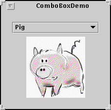
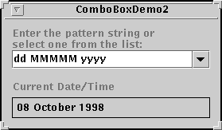
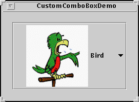

Feedback Form
|
|
Start of Tutorial > Start of Trail > Start of Lesson |
Search
Feedback Form |
AJComboBoxcomes in two very different forms: uneditable and editable.
By default, a combo box is uneditable. A uneditable combo box looks like a button until the user interacts with it. When the user presses or clicks it, the combo box displays a menu of items to choose from. Use an uneditable combo box to display one-of-many choices when space is limited, when the number of choices is large, or when the menu items are computed at run-time. Other components that display one-of-many choices are lists and groups of radio buttons.
An editable
JComboBoxlooks like a text field with a small button abutting it. The user can type a value in the text field or click the button to choose a value from a menu. An editable combo box saves data-entry time by providing shortcuts to commonly entered values.Because editable and uneditable combo boxes are so different, this section treats them separately. This section covers these topics:
The application shown here uses an uneditable combo box for choosing a pet picture: The following code, taken from
Try this:
- Compile and run the program:
ComboBoxDemo.java. You will also need five image files.
See Getting Started with Swing if you need help compiling or running this application.- Choose a pet name from the combo box to view its picture.
- How to Use Radio Buttons provides a version of this program,
RadioButtonDemo, that uses a group of radio buttons instead of a combo box. Compile and run that program. Compare the source code, operation, and UI of the two programs.ComboBoxDemo.javaThe code initializes the combo box with an array of strings. You can also put icons in a combo box. To put other types of objects in a combo box, or to customize how the items in a combo box look, you need to write a custom renderer. An editable combo box would also need a custom editor. Refer to Providing a Custom Renderer for information and an example.String[] petStrings = { "Bird", "Cat", "Dog", "Rabbit", "Pig" }; // Create the combo box, select item at index 4. // Indices start at 0, so 4 specifies the pig. JComboBox petList = new JComboBox(petStrings); petList.setSelectedIndex(4); ...Although not shown above, the program registers an action listener on the combo box. To see the code and learn about other types of listeners supported by combo box, refer to Handling Events on a Combo Box.
No matter which constructor you use, a combo box uses a combo box model to contain and manage the items in its menu. When you initialize a combo box with an array or a vector, the combo box creates a default model object for you. As with other Swing components, you can customize a combo box in part by implementing a custom model -- an object that implements the
ComboBoxModel
Note: Be careful when implementing a custom model for a combo box. TheJComboBoxmethods that change the items in the combo box's menu, such asinsertItemAt, work only if the data model implements theMutableComboBoxModelComboBoxModel). Refer to the API tables to see which methods are affected.
Here's the code fromComboBoxDemothat registers and implements an action listener on the combo box:This action listener gets the newly selected item from the combo box, uses it to compute the name of an image file, and updates a label to display the image. The combo box fires an action event when the user selects an item from the combo box's menu. See How to Write an Action ListenerpetList.addActionListener(new ActionListener() { public void actionPerformed(ActionEvent e) { JComboBox cb = (JComboBox)e.getSource(); String petName = (String)cb.getSelectedItem(); picture.setIcon(new ImageIcon("images/" + petName + ".gif")); } });, for general information about implementing action listeners.
Combo boxes also generate item events, which are fired when any of the items' selection state changes. Only one item at a time can be selected in a combo box, so when the user makes a new selection the previously selected item becomes unselected. Thus two item events are fired each time the user selects a different item from the menu. If the user chooses the same item, no item events are fired. Use
addItemListenerto register an item listener on a combo box. How to Write an Item ListenerAlthough
JComboBoxinherits methods to register listeners for low-level events -- focus, key, and mouse events, for example -- we recommend that you don't listen for low-level events on a combo box. Here's why: A combo box is a compound component -- it is comprised of two or more other components. The combo box itself fires high-level events such as action events. Its subcomponents fire low-level events such as mouse, key, and focus events. The low-level events and the subcomponent that fires them are look-and-feel-dependent. To avoid writing look-and-feel-dependent code, you should listen only for high-level events on a compound component such as a combo box. For information about events, including a discussion about high- and low-level events, refer to Writing Event Listeners
Here's a picture of a demo application, provided by our coworker Dale Green, that uses an editable combo box to enter a pattern with which to format dates.
Try this:
- Compile and run the example:
ComboBoxDemo2.java
See Getting Started with Swing if you need help compiling or running this application.- Enter a new pattern by choosing one from the combo box's menu. The program reformats the current date and time.
- Enter a new pattern by typing one in and pressing Return. Again the program reformats the current date and time.
The following code, taken from
ComboBoxDemo2.javaThis code is very similar to the previous example, but warrants a few words of explanation. The bold line of code explicitly turns on editing to allow the user to type values in. This is necessary because, by default, a combo box is not editable. This particular example allows editing on the combo box because its menu does not provide all possible date formatting patterns, just shortcuts to frequently used patterns.String[] patternExamples = { "dd MMMMM yyyy", "dd.MM.yy", "MM/dd/yy", "yyyy.MM.dd G 'at' hh:mm:ss z", "EEE, MMM d, ''yy", "h:mm a", "H:mm:ss:SSS", "K:mm a,z", "yyyy.MMMMM.dd GGG hh:mm aaa" }; . . . JComboBox patternList = new JComboBox(patternExamples); patternList.setEditable(true); patternList.addActionListener(...); . . .An editable combo box fires an action event when the user chooses an item from the menu and when the user types Return. Note that the menu remains unchanged when the user enters a value into the combo box. If you want, you can easily write an action listener that adds a new item to the combo box's menu each time the user types in a unique value.
See Internationalization
A combo box uses a renderer to display each item in its menu. If the combo box is uneditable, it also uses the renderer to display the currently selected item. An editable combo box, on the other hand, uses an editor to display the selected item. A renderer for a combo box must implement theListCellRendererComboBoxEditorThe default renderer knows how to render strings and icons. If you put other objects in a combo box, the default renderer calls the
toStringmethod to provide a string to display. You can customize the way a combo box renders itself and its items by implementing your ownListCellRenderer.Here's a picture of an application that uses a combo box with a custom renderer:
 You can find the full source code for this example inCustomComboBoxDemo.javaThe following statements from the example create an instance of
ComboBoxRenderer(a custom class) and set up the instance as the combo box's renderer:To see how the default renderer renders icons, just comment out the call toJComboBox petList = new JComboBox(images); ComboBoxRenderer renderer = new ComboBoxRenderer(); renderer.setPreferredSize(new Dimension(200, 130)); petList.setRenderer(renderer); petList.setMaximumRowCount(3);setRenderer, and compile and run the program again.The code also sets the combo box's maximum row count. This attribute controls the number of items visible when the menu is displayed. If the number of items in the combo box is larger than its maximum row count, the menu has a scroll bar. The icons are pretty big for a menu, so the code limits the number of rows to 3. Here's the complete implementation of
ComboBoxRenderer, a renderer that puts an icon and text side-by-side:As aclass ComboBoxRenderer extends JLabel implements ListCellRenderer { public ComboBoxRenderer() { setOpaque(true); setHorizontalAlignment(CENTER); setVerticalAlignment(CENTER); } public Component getListCellRendererComponent( JList list, Object value, int index, boolean isSelected, boolean cellHasFocus) { if (isSelected) { setBackground(list.getSelectionBackground()); setForeground(list.getSelectionForeground()); } else { setBackground(list.getBackground()); setForeground(list.getForeground()); } ImageIcon icon = (ImageIcon)value; setText(icon.getDescription()); setIcon(icon); return this; } }ListCellRenderer,ComboBoxRendererimplements a method calledgetListCellRendererComponent, which returns a component whosepaintComponentmethod is used to display the combo box and each of its items. The easiest way to display an image and an icon is to use a label. SoComboBoxRendereris a subclass of label and returns itself. The implementation ofgetListCellRendererComponentconfigures the renderer to display the currently selected icon and its description.These arguments are passed to
getListCellRendererComponent:Note that combo boxes and lists use the same type of renderer --
JList list-- a list object used behind the scenes to display the items. The example uses this object's colors to set up foreground and background colors.Object value-- the object to render. AnIconin this example.int index-- the index of the object to render.boolean isSelected-- indicates whether the object to render is selected. Used by the example to determine which colors to use.boolean cellHasFocus-- indicates whether the object to render has the focus.ListCellRenderer. You can save yourself some time by sharing renderers between combo boxes and lists, if it makes sense for your program.
The following tables list the commonly usedJComboBoxconstructors and methods. Other methods you are most likely to invoke on aJComboBoxobject are those it inherits from its superclasses, such assetPreferredSize. See The JComponent API for tables of commonly used inherited methods.The API for using combo boxes falls into two categories:
Setting or Getting the Items in the Combo Boxes's Menu Method Purpose JComboBox()
JComboBox(ComboBoxModel)
JComboBox(Object[])
JComboBox(Vector)Create a combo box with the specified items in its menu. A combo box created with the default constructor has no items in the menu initially. Each of the other constructors initializes the menu from its argument: a model object, an array of objects, or a Vectorof objects.void addItem(Object)
void insertItemAt(Object, int)Add or insert the specified object into the combo box's menu. The insert method places the specified object at the specified index, thus inserting it before the object currently at that index. These methods require that the combo box's data model be an instance of MutableComboBoxModel.Object getItemAt(int)
Object getSelectedItem()Get an item from the combo box's menu. void removeAllItems()
void removeItemAt(int)
void removeItem(Object)Remove one or more items from the combo box's menu. These methods require that the combo box's data model be an instance of MutableComboBoxModel.int getItemCount()Get the number of items in the combo box's menu. void setModel(ComboBoxModel)
ComboBoxModel getModel()Set or get the data model that provides the items in the combo box's menu.
Customizing the Combo Box's Operation Method Purpose void addActionListener(ActionListener)Add an action listener to the combo box. The listener's actionPerformedmethod is called when the user selects an item from the combo box's menu or, in an editable combo box, when the user presses Return.void addItemListener(ItemListener)Add an item listener to the combo box. The listener's itemStateChangedmethod is called when the selection state of any of the combo box's items change.void setEditable(boolean)
boolean isEditable()Set or get whether the user can type in the combo box. void setRenderer(ListCellRenderer)
ListCellRenderer getRenderer()Set or get the object responsible for painting the selected item in the combo box. The renderer is used only when the combo box is uneditable. If the combo box is editable, the editor is used to paint the selected item instead. void setEditor(ComboBoxEditor)
ComboBoxEditor getEditor()Set or get the object responsible for painting and editing the selected item in the combo box. The editor is used only when the combo box is editable. If the combo box is uneditable, the renderer is used to paint the selected item instead.
This table shows the examples that useJComboBoxand where those examples are described.
Example Where Described Notes ComboBoxDemoThis section Uses an uneditable combo box. ComboBoxDemo2This section Uses an editable combo box. CustomComboBoxDemoThis section Provides a custom renderer for a combo box. TableRenderDemoHow to Use Tables (Further Customizing Table Display and Event Handling) Shows how to use a combo box as a table cell editor.
|
|
Start of Tutorial > Start of Trail > Start of Lesson |
Search
Feedback Form |